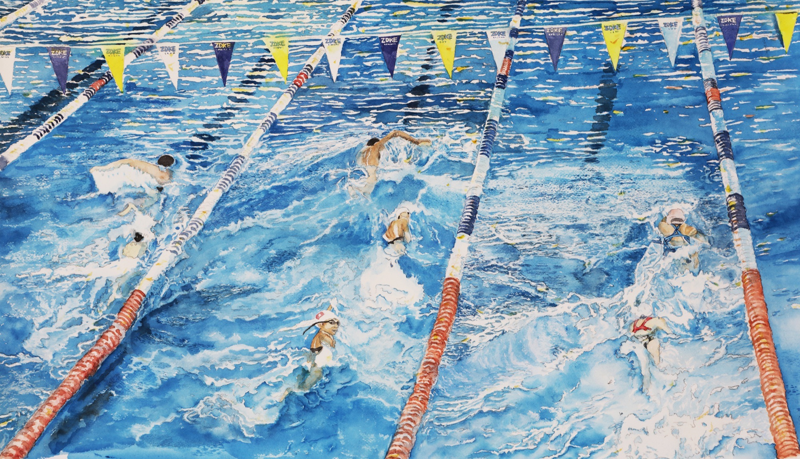

Blue Dream
梦之蓝

- Artwork ID / 作品编号
- KW-W-000030
- Year / 年份
- 2020
- Medium / 媒介
- Watercolor on paper / 纸本水彩
- Dimensions / 尺寸
- 53 × 76 cm (H × W / 高 × 宽)
About the work / 作品介绍
Blue Dream is inspired by young swimmers in training. Rhythmic waves, intersecting swimming lanes, and luminous blue tones construct a composition filled with vitality and movement. Rather than depicting sport alone, the painting uses water as a metaphor for resilience, aspiration, and continuous transformation. The expansive blue palette symbolizes hope, openness, and the enduring power of life.Blue Dream marks an important early milestone in the artist's watercolor practice and represents the beginning of her professional exploration of the medium.
《梦之蓝》取材于少年游泳训练的真实场景，以跃动的水波、交织的泳道和明亮的蓝色构建出充满生命力的画面。人物在水中不断向前，激起层层浪花，既呈现竞技训练的力量，也映照生命成长过程中持续突破自我的精神状态。作品并非单纯描绘运动，而是借由水这一具有包容性与流动性的媒介，表现梦想、坚持与成长之间的关系。蓝色既象征广阔与希望，也承载着生命不断向前延展的力量，使画面在现实场景中呈现出诗性的精神气质。《梦之蓝》是艺术家早期水彩创作的重要代表作品，也是其进入专业水彩创作阶段的重要起点。